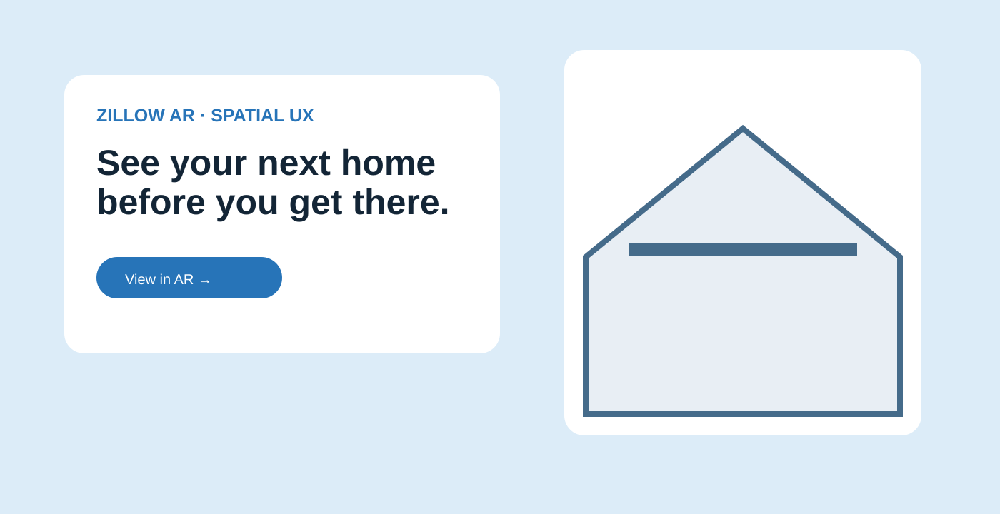

Selected original visuals from my Behance portfolio.
Reduce the distance between a listing and the place it represents.
Real-estate discovery asks people to mentally connect listings, maps, photographs and a physical neighborhood. AR creates an opportunity to bring those relationships together, but adding information to the world does not automatically create a better experience.
The design question became: what information earns attention in the physical context, and when should the experience move from a lightweight spatial cue into deeper property detail?
My role: define the interaction model before the novelty
I approached the concept from the user's context rather than from the technology. The work focuses on the hierarchy between discovery, orientation and investigation, and on the trust relationship between spatial cues and verified property information.
Strategy: layer information by intent
Glanceable cues support discovery. A deliberate gesture or selection reveals deeper information. That progression keeps the environment primary and prevents the interface from becoming a floating dashboard that competes with the neighborhood.
Use lightweight cues to surface relevant properties without overwhelming the scene.
Reveal richer details only after the user expresses interest.
Make the transition to listing information clear so spatial exploration leads somewhere useful.
Production questions belong in the UX
A real spatial product would need explicit treatment of privacy, location accuracy, accessibility, motion, battery use and environmental conditions. It would also need to distinguish verified property facts from contextual estimates. Calling out these constraints early is part of responsible product leadership.
Leadership impact
This exploration shows how I evaluate emerging interfaces: separate technological possibility from product value, define what deserves attention, establish trust boundaries and design the smallest interaction that helps a person make progress.